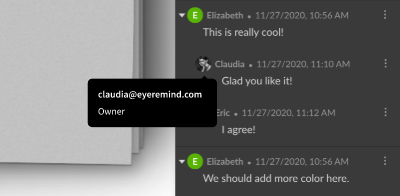
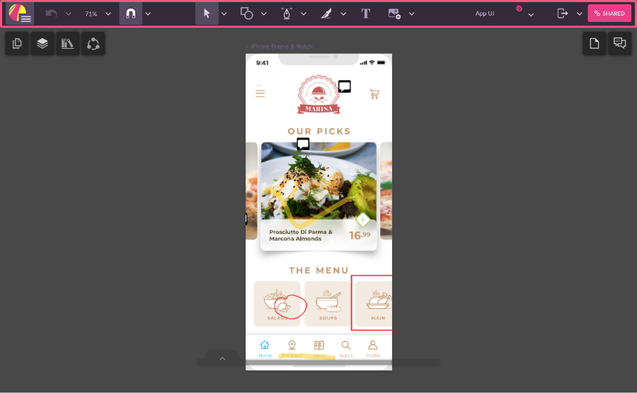
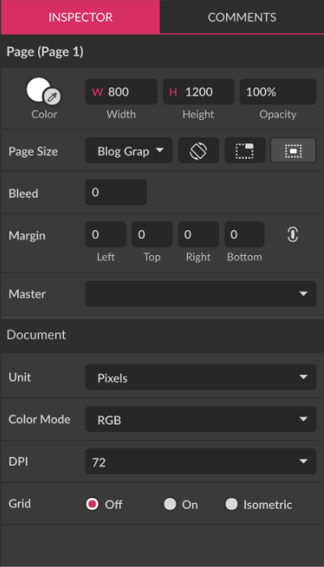
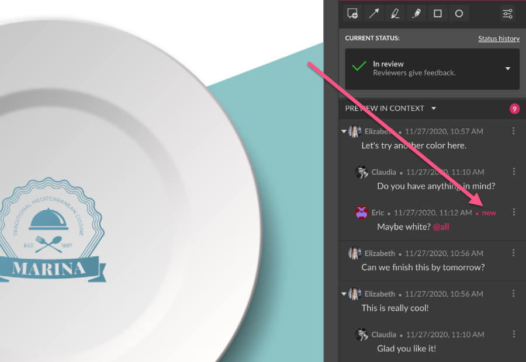
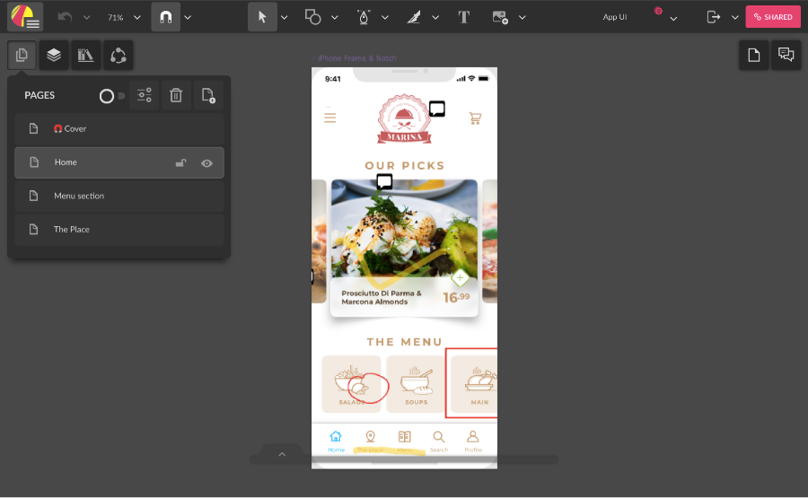
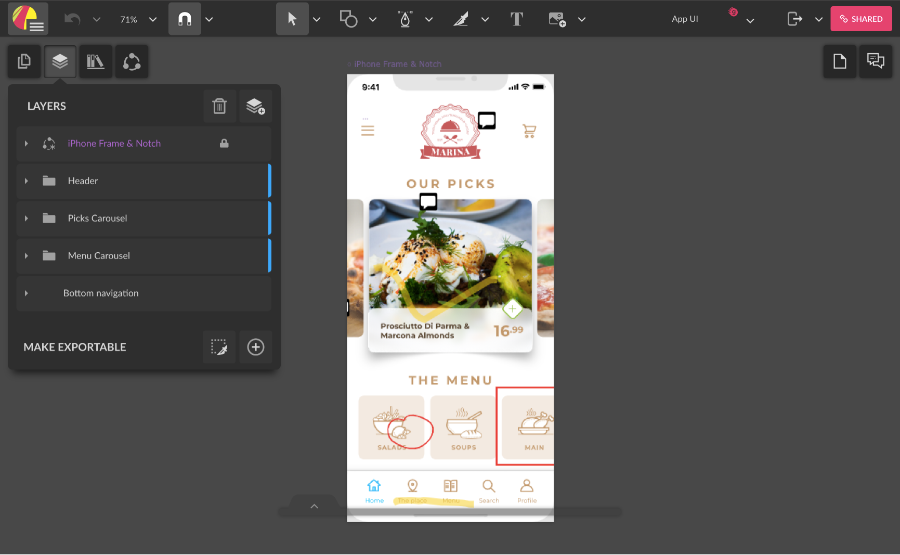
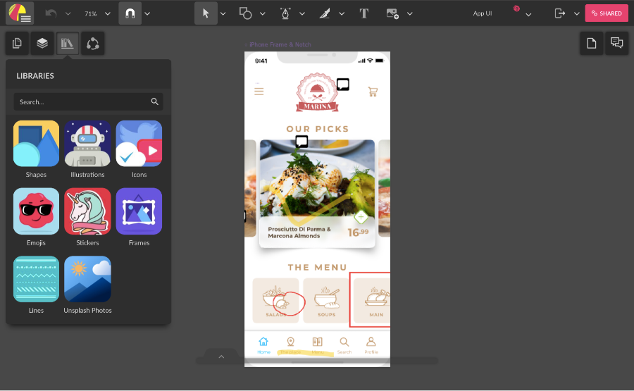
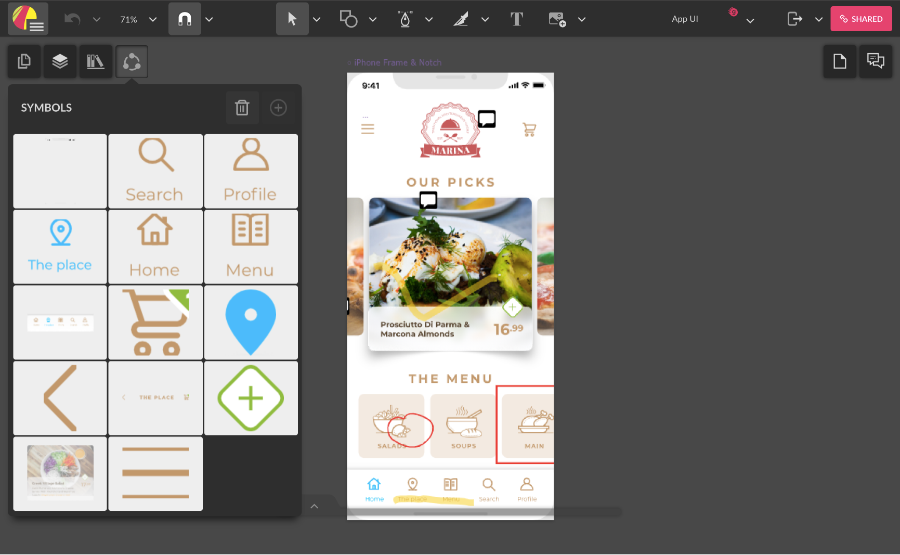
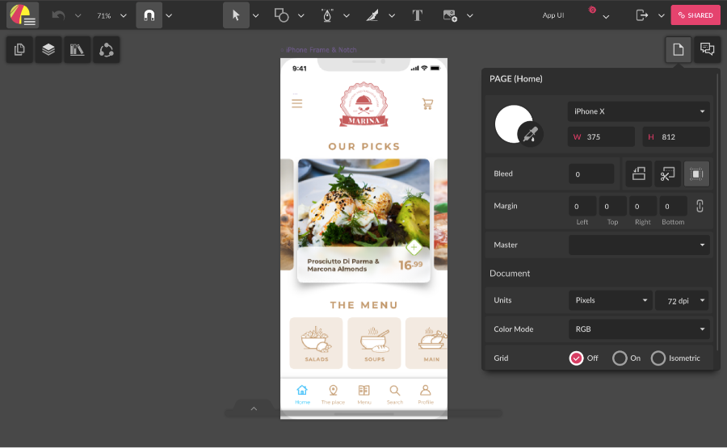

User interface
The Gravit Designer interface has five main parts: toolbar, canvas, Inspector panel, Layers panel, and menu bar. We are working hard to keep the interface as simple as possible, but allow the power users to work fast and efficiently while accessing many advanced features.

Canvas (1)
The canvas (A) is at the center of the Gravit Designer interface, and this is where you create your design. Initially, the canvas looks like a white piece of paper with a slight shadow. All objects you create in this area are exported in the final output. Everything outside the canvas, an area sometimes referred to as the pasteboard (B), isn’t exported and can be used as temporary storage of objects and partially hidden parts of the design.
You can change the canvas color in the Inspector panel (3). Deselect everything by pressing + + or clicking a blank area of the canvas). Click the color picker at the top-left corner of the Inspector panel and select a new color. You can learn more about working with color here.
Toolbar (2)

The toolbar is located at the top of the Gravit Designer window. It contains Gravit Designer tools, as well as some frequently used commands. See more on tools here.
Inspector panel (3)
The right sidebar is called the Inspector panel, and it’s divided into two tabs:
- Inspector tab (selected by default)
- Comments tab
INSPECTOR Tab

All the properties of selected objects on canvas are accessible here. This unified control panel lest you manage properties. It is contextual, so it adapts to what you’re doing or the tool you have selected. For example, if you select a vector shape on canvas, the Inspector panel displays controls for changing shapes coordinates, size, fills, borders, effects, and so on. Every object in Gravit Designer has different properties and the Inspector panel adapts its content accordingly.
If nothing is selected, the Inspector panel displays the current page (canvas) properties, as well as some document properties.
You can toggle the visibility of the Inspector panel by clicking .
COMMENTS Tab

The Comments tab is where users with access to shared files can interact by leaving comments, annotations and answering questions from other users. The annotation tools are located at the top, along with the status of the review process. Comments are divided by document page.
You can toggle the visibility of the Comments tab by clicking .
Layers panel (4)

The left sidebar is called the Layers panel, and it’s divided into three tabs:
- Layers tab (selected by default)
- Library tab
- Symbols tab
Layers Tab
The Layers tab is subdivided into the Pages panel (1) and Layers panel (2).

Pages panel (1)
The Pages panel lists all the pages in the document. You can add, rename, delete and rearrange pages. By default, there is only one page. If you want to see all the pages at the same time, you can switch to the Multipage mode by clicking the toggle button in the Pages panel.
To learn more about pages in Gravit Designer, see the Pages chapter.
Layer panel (2)
The Layers panel lists all the objects (including Groups, Layer Groups, Symbols, Frames) on the current page in a hierarchical view. You can select, hide, lock, delete objects, as well as group, rename and rearrange (stack) them.
To learn more about the Layers panel, see the Layers chapter.
You can toggle the visibility of the Inspector panel by clicking .
Libraries tab

The Libraries tab is searchable collection of design assets that you can use in your design. Libraries include Shapes, Illustrations, Icons, Emojis, Stickers, Frames, and Lines. You can the search bar to find assets and then drag them directly on the canvas.
You can toggle the visibility of the Inspector panel by clicking .
Symbols tab

The Symbols tab lists all symbols used in the current document. You can drag a symbol thumbnail to the canvas. Learn more about symbols
You can toggle the visibility of the Inspector panel by clicking .
Menu bar(5)

The menu bar is a collection of object-specific and global functions and options. It is divided into five menus:
Full-Screen
There is a Full-Screen mode that hides all Gravit Designer interface except the canvas. To activate it press + . You can switch back by pressing + again.